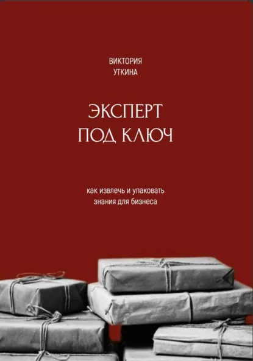

Где работала
Заказчики
Любой продукт должен приносить прибыль бизнесу и результат для вас. Иначе это не продукт, а потеря инвестиций.
Инвестиция, выход на новый рынок или реструктуризация, когда цена ошибки слишком высока для решения на ощущениях
Быстрые и обоснованные заключения: подготовка за часы вместо недель, и CEO принимает их с первого раза
Пространство спроса, в котором пока нет конкурентов: новые группы клиентов и сценарии
Проектирование системы, в которой каждый элемент (менеджеры, каналы и методология) нацелен на окупаемость инвестиций
Инструменты управления процессами на уровне крупных финансовых показателей и ROI
Отказ от тактики «латания дыр» в пользу системного подхода к управлению процессами
Переход от ручного управления к управлению на основе данных
«Стратсессия 360»: рынок, смежные отрасли и сценарии за пределами привычного поля зрения. Преворк делают ИИ-агенты — команда тратит время на решения, а не на подготовку
Подробнее о продукте → 02ИИ-агенты и платформы, собранные под методологию и критерии компании, берут на себя сбор информации, анализ и первичную оценку. Руководитель не тратит на это время, а фокусируется на главном: принятии стратегических и управленческих решений
Подробнее о продукте → 03Системное и критическое мышление, структурированная коммуникация (Минто, SCQA, 6-pager), управление изменениями. Модульные программы для CEO-1 и CEO-2
Подробнее о продукте →
Литрес, 2025
Книга систематизирует 20 лет практического опыта и предлагает фреймворк для извлечения и упаковки экспертных знаний в продукты для рынков B2C и B2B.
Читать на ЛитресИИ-инструменты работают на обезличенных данных. Информация, составляющая коммерческую тайну, маскируется до передачи в алгоритм — чувствительные данные не передаются алгоритму в открытом виде, что предотвращает риск их утечки.
Владелица агентства «Без Воды» (withoutwater.ru). 20 лет в сфере обучения взрослых. С 2012 года — корпоративный управленческий опыт: работа с клиентами, управление продуктом, командой и бюджетами.